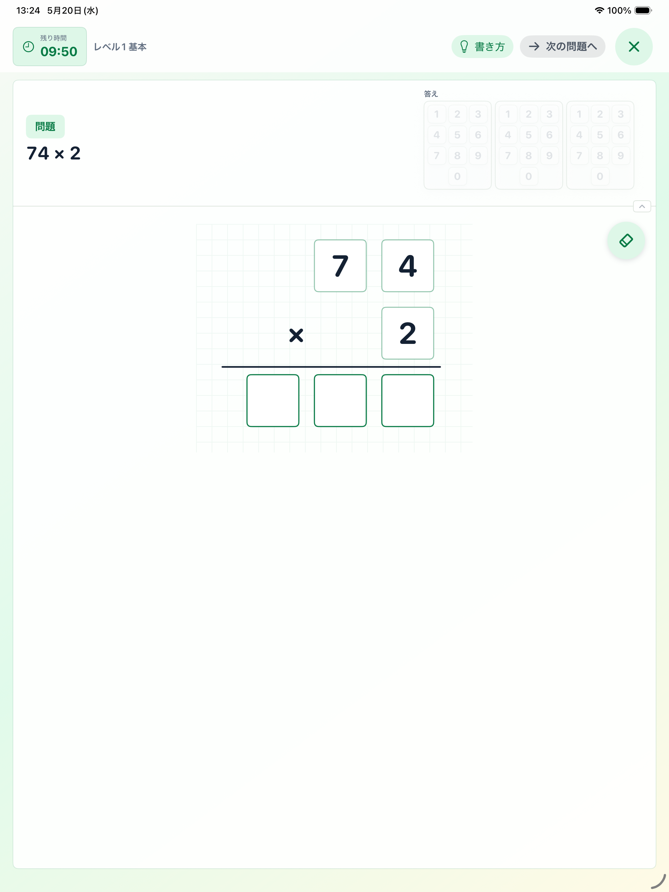
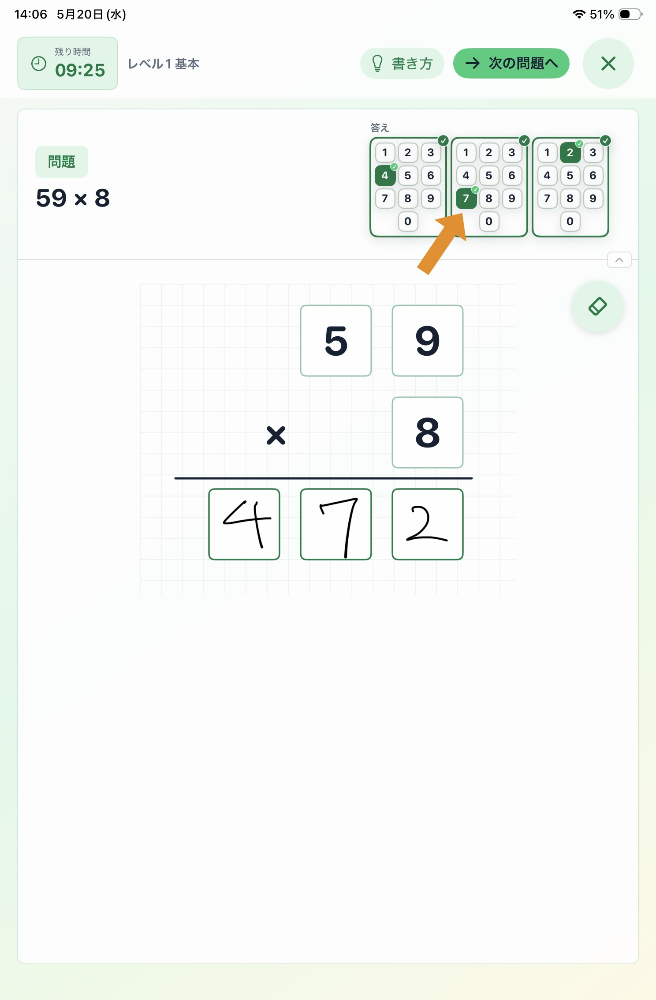
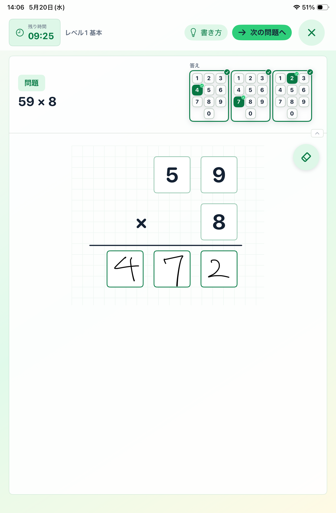

1ホーム画面
レベルと時間をえらぶ
今日の練習に合うレベルと時間をえらんで、スタートします。
- 「レベル」で、練習したいむずかしさをえらびます。
- 「時間」で、5分、10分、15分、20分からえらびます。
- えらべたら、緑の「スタート」を押します。

2練習画面
問題を見て書き始める
上の問題を見て、緑の枠のマスに数字を書いていきます。
- 左上の「問題」を見て、かけられる数とかける数をたしかめます。
- 答えの数字を、位に気をつけながらマスに1つずつ書きます。
- 下向きの矢印があるときは、次に書く場所の目印です。
ポイント: 数字は大きく、1つのマスに1つだけ書くと読み取りやすくなります。


3読み取りを直す
候補から数字を選び直す
読み取りがちがうときは、上の候補ボタンで自分で直します。
- 書いた数字の候補が、上の小さな数字ボタンに出ます。
- 答えの数字がちがう読み取りになっていたら、正しい数字を押します。
- 書いた文字と読み取りが違う時は、正しい数字を選び直してから「次の問題へ」を押します。


4次の問題へ
答えをたしかめて進む
最後まで書けたら、答えがそろっているか見てから進みます。
- 答えのマスを最後まで書きます。
- 読み取り候補が出ていたら、正しい数字を選びます。
- 「次の問題へ」が緑になったら押して進みます。

5結果画面
結果を見る
時間が終わると、今日の練習結果が出ます。
- 正解数、解答数、正答率を見ます。
- 「再出題が残った問題」は、あとで復習したい問題です。
- もう一度練習するときは「もう一度」、終わるときは「ホームへ」を押します。